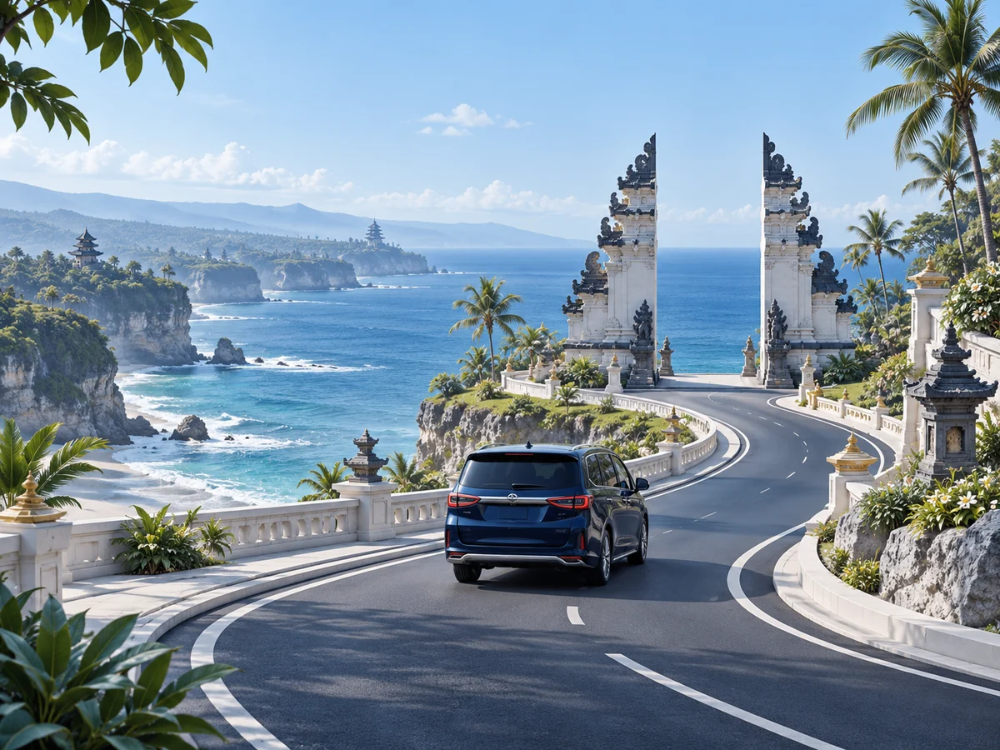
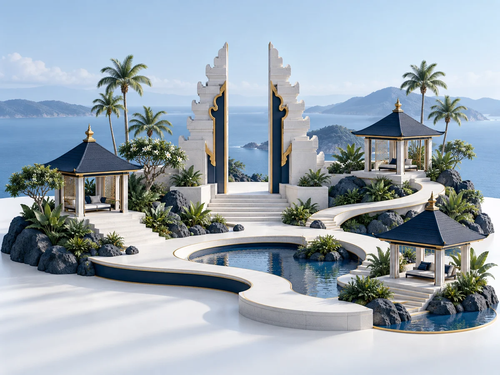

Menyiapkan perjalanan di Bali
Informasi yang membantu Anda menjelaskan kebutuhan perjalanan sebelum memesan kendaraan.
Lihat semua artikelPT Tiga Pilar Dewata · Bali
Siwride adalah produk PT Tiga Pilar Dewata untuk pemesanan kendaraan dan pengelolaan transportasi.

PT Tiga Pilar Dewata
Kenali perusahaan, lihat informasi Siwride, atau hubungi tim untuk membicarakan kerja sama.

Tentang perusahaan
PT Tiga Pilar Dewata menghadirkan Siwride untuk kebutuhan transportasi dan perjalanan di Bali.
Produk perusahaan
Platform pemesanan kendaraan dan pengelolaan transportasi untuk perjalanan di Bali.
Buka halaman SiwrideAirport transfer
Tour package
Sharing ride
Hourly service
Kemitraan
Informasi bagi pelaku travel, pemandu wisata, dan mitra transportasi yang ingin berdiskusi dengan tim.
Informasi yang membantu Anda menjelaskan kebutuhan perjalanan sebelum memesan kendaraan.
Lihat semua artikelKontak
Untuk pertanyaan tentang perusahaan, Siwride, atau peluang kemitraan.